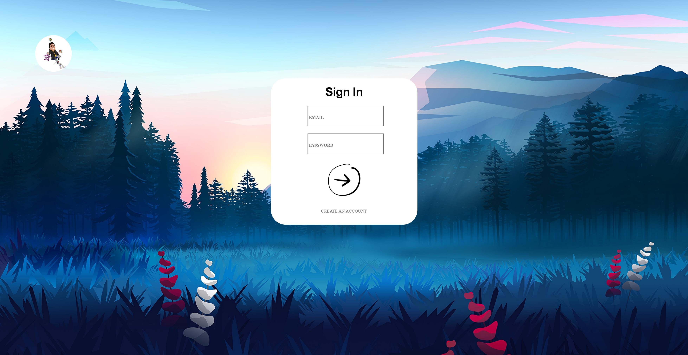

Portfolio Blog
This blog is the project coursework for my Fundamentals of web technology module. The blog's purpose was to show all the skills we learned during this module: HTML, CSS, JavaScript, and PHP. I performed so well in this coursework that I achieved the maximum mark awardable. I also got an overall 100% (First grade) in this module.
Another purpose of the blog was to generate a portfolio that we could have deployed online. In my opinion, the blog has a poor user experience, and I think I could have a lot of improvements to it.
Without further ado, let's start with exploring it.
Sign in Page
The sign-in page has only a single worth to mention feature. I will explain this feature on the registration page, as both of these pages have this feature in common.
Registration
In the registration, as you can see, the picture is a bit blurred. You see it blurred because the background image is swapping with another picture; the website does this periodically every 10 seconds. This feature was the feature I was referring to in the sign-in section.
Main page
The home page of the website was supposed to be this massive page about me. There is nothing special about the page other than a youtube video about Sicily, where I am from, which never played when I deployed it in the Openshift platform.

Blog page
The blog is a place where registered users' posts are displayed. You can filter the user's entries in the blog by month, and this will display only the posts that got written in that specific month. My code makes use of SQL pre-embedded commands to achieve the filtering option.
Add Post page
Any registered user can post into the blog through the add post page. The user must insert both a title and a body for submitting it. The date, time, username of the post; are automatically recorded by the system on submission. If the user tries to omit one of the fields, an error will be displayed, causing the field's border where the omission occurred to light up.
Preview Example
One last feature is to preview your post on the blog page. From the previous page, after pressing the preview button, you will be redirected to the blog page, however, in this scenario, the post is not yet submitted and the all process is performed client-side. From here, the user can decide to finalize his post and submit it or go back to edit it.
Conclusion
I particularly enjoyed creating this blog, but now your question might be: "why did he not use this webpage as my portfolio website?" The reason is that I don't think the user experience on navigating this website is of good quality. Due to time constraints, I produced this website without a designing phase, resulting in zero reusable code or zero space for updates. Therefore, I preferred restarting this project using an internet template that I found from HTML 5 UP(The website you are currently navigating in). The reasoning for doing that is to have the user enjoy knowing about me without being frustrated from a poorly website design.